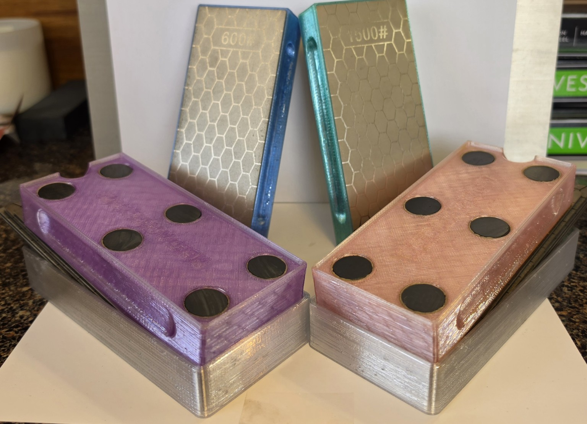
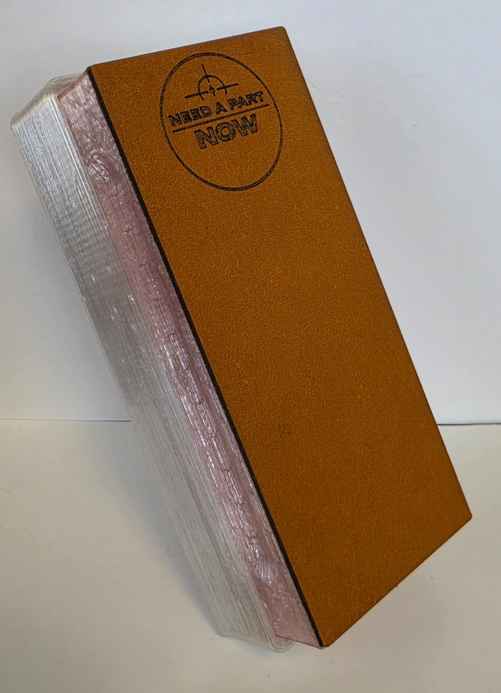
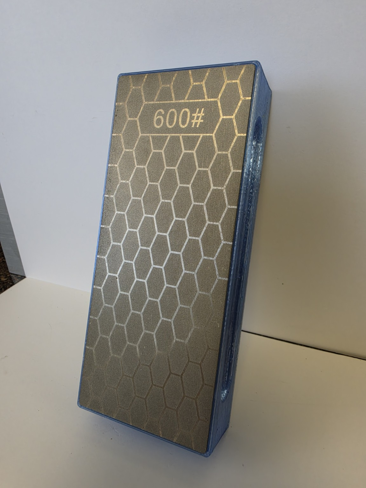

Choose the system that fits how you sharpen. Compare the included grits, storage, strop and color options for all four models.
KNIFE SHARPENING SYSTEMS
Meet the Family
Four practical sharpening systems, from the complete flagship kit to simple two-sided sharpeners. Choose a model to see exactly what is included.

Left to right: Grandma Patsy and Susie in front, with Jamesy and Cousin Louie behind them.

FLAGSHIP SYSTEM
Susie
Five removable plates from 320 to 3,000 grit, storage base and buffalo-hide strop. Built for knives around the house and in the kitchen.
Shipped: $65.99Local pickup—pay online: $55.99No cash accepted at the shop.View Susie
ALL-AROUND SYSTEM
Grandma Patsy
Five removable plates from 240 to 1,500 grit with a storage base. Made for all-around household and pocket-knife sharpening.
Shipped: $55.99Local pickup—pay online: $45.99No cash accepted at the shop.View Grandma Patsy

TOUGH AND SIMPLE
Jamesy
Two permanently installed plates: 600 grit and 1,200 grit. No base, strop or loose parts. Good for the garage or around the workshop.
Shipped: $45.99Local pickup—pay online: $35.99No cash accepted at the shop.View Jamesy
SO LIGHT IT FLOATS IN WATER
Cousin Louie
Two permanently attached diamond plates: 800 grit and 1,500 grit. No loose parts, and the complete sharpener floats in water. Great for camping, hunting, and fishing.
Shipped: $35.99Local pickup—pay online: $25.99No cash accepted at the shop.View Cousin Louie
LEARN THE SYSTEM
See How to Use It
Watch the complete knife-sharpening lesson covering grip, angle, diamond plates and finishing the edge.